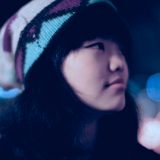
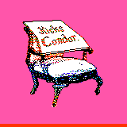

 glitchyowl ·:·.*
Before the beginning, we made a wish for a more expressive web. This is the tale of purple desert designs, silent HTML streams, MacPaint toolbars, Mario Kart-inspired JavaScript and our household gaudy drop shadows. This is Multiverse –– a constellation of internet corners, a micro-blogging network that belongs to us
The Web has converged on a color called 'gwalb' - gray with a little blue. Drained of all of its color, people become small circles with unstyled text next to them. Far from the World Wide Web we used to know! Over here, you can have your own walk-in closet of jackets for your voice. Depends on the dress code, you can get fancy for the party, or if you are feeling a little homesick, then put on the fuzzy PJs and tuck in.
glitchyowl ·:·.*
Side note: you can also step aside to get on a slight tangent, nerd out on a rabbit hole, then go back to the original conversation. Whether it's a group conversation or a monologue, express them in hypertext and with multi-media (down the line) - and when you’re done, this becomes a hyperlinked blog post of some sort, with a beginning, an ending, and a title maybe - could be interesting. Ahh, I’m explaining too much - it is just an attempt to branch off on the hyperconversation game.
 kickscondor
There are quite a few subtle things we are experimenting with. I know, I know, we've still got a long way to go, but that's the fun part. How cool is it that we get to mix in our personalities and have networked conversations.
kickscondor
Semi-translucent, fogged-up styles - achieved by dropping a light-colored shadow with a rather heavy blur on it - but leaving the box layer above the shadow almost clear - but with a subtle gradient to it. It’s like having a toolbox like Microsoft Paint as you create a corner for yourself on the internet. You can color your voice with your personality, rather than having it flattened out by technology giants. This is the kind of remixes that get us energised.
Sort of like a zine, a collage, a bunch of glued tweets and essays - how do I describe it? This is something in-between, It’s a place that celebrates different kinds of media, so, give us a few moon cycles, and let’s play with all these web materials together!
glitchyowl ·:·.*
Whether it’s photo journaling, documenting your project, sharing a mini life update, or something we haven’t thought of, it’s a place for you to weave together words, ideas, and feelings. Above and beyond all of these, it is perhaps a place for us to grow confidence in our voice and discover the willingness to and the wonder of carrying that voice out into the world.
Or, if you are feeling a little social, you can also blog chat with each other ~ Think of blogchatting as an activity like dancing, playing music, playing with basketball – it’s enjoyable and rewarding on your own, but enhanced by the companion of others.
hyperconversation := a conversation integratively built upon explicit referential linking to at least one hyperobject
See here.
Development Levels (from chame's wiki)
no level - for meta-pages, scratchpads and random stuff.
level zero - article is perfect.
level one - done, but may be tweaked in minor ways.
level two - mostly done, final draft, structure is sound.
level three - in progress, half-finished, structure can be done.
level four - barely started, a skeleton or sketch.
level five - not yet started, just a title or blurb.
Original URL is here.
END OF CHAT